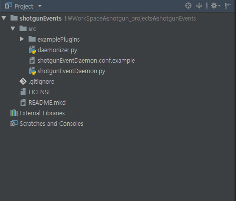
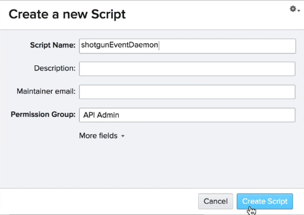
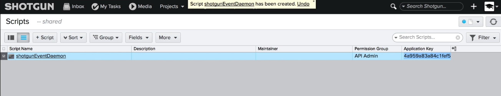
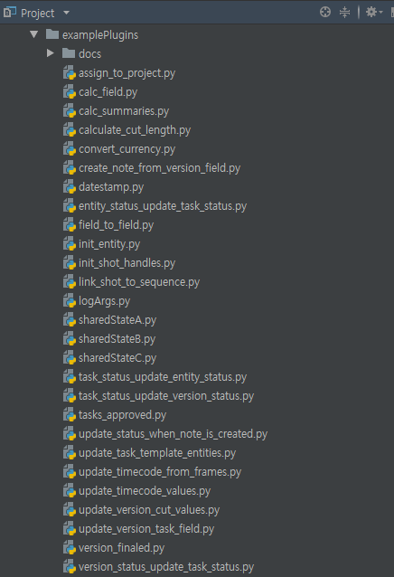

Installing the daemon (데몬 설치)
To download the daemon visit shotgun software on github. 데몬을 다운로드하려면 github에서 샷건 소프트웨어를 방문하십시오. https://github.com/shotgunsoftware?utf8=%E2%9C%93&q=&type=&language=
Search for shotgun events and clone the repo to the computer that will be running the daemon.
shotgun events를 검색하여 데몬을 실행할 컴퓨터에 복제합니다.
In my case I'll just run it off my laptop here. 제 경우에는 제 노트북에서 설치 할 거에요.
git clone https://github.com/shotgunsoftware/shotgunEvents.git

But in production you'll want to choose a reliable server that you can access easily and that will fingers crossed be up all the time. 하지만 프로덕션 환경에서는 쉽게 액세스할 수 있고 항상 서로 교차하는 신뢰할 수 있는 서버를 선택해야 합니다.
Okay let's take a look at the shotgun events contents here. 자, 그럼 샷건 이벤트 내용을 살펴봅시다.
All the goodies are in the source folder. So I'll open that up. 모든것 원본 폴더에 있습니다. 그래서 제가 그것을 열겠습니다.
First I'll do a save as on the configuration file without the dot example bit and then identify a logs directory my user has access to.
shotgunEventDaemon.conf.example을 shotgunEventDaemon.conf로 복사 합니다.
It looks like my user doesn't have permission to create folders and var log. 사용자에게 폴더와 로그 생성 권한이 없는 것 같습니다.
So I'll just swap that out for my take some time yourself to decide where you'd like these log and ID files to end up on your server and don't worry about what the PID file and event ID file are just yet we'll come back to those later. 이 로그 파일과 ID 파일이 서버에 저장될 위치를 결정하기 위해 잠시 시간을 할애해 보겠습니다. PID 파일과 이벤트 ID 파일이 나중에 어떤 것인지는 걱정하지 마십시오.
Next change the logging level to ten. 다음으로 로깅 수준을 10으로 변경합니다.
This will give you more of a boasts log output which is good for developing or learning the daemon. 이렇게 하면 데몬을 개발하거나 학습하는 데 유용한 보다 많은 로그 출력이 제공됩니다.
# src/shotgunEventDaemon.conf
pidFile: I:/WorkSpace/shotgun_projects/shotgunEventDaemon/shotgunEventDaemon.pid
eventIdFile: I:/WorkSpace/shotgun_projects/shotgunEventDaemon/shotgunEventDaemon.id
logPath: I:/WorkSpace/shotgun_projects/shotgunEventDaemon/logs
logging: 10
You can switch it back to 20 sometime in the future once you're more familiar with the demon and its quirks. 데몬과 데몬의 기능에 대해 더 잘 알게 되면 나중에 20개로 바꿀 수 있습니다.
The next important bit is the shotgun connection info down here. 다음으로 중요한 것은 샷건 연결 정보입니다.
Swapping your site and provide a script name and access key. 사이트를 스와핑하고 스크립트 이름과 액세스 키를 제공합니다.
I'll create one for my site now and then pop it in here. 샷건 스크립트 사이트에서 키를 생성하고 그 키값을 넣습니다.


server: https://aiw.shotgunstudio.com
key: **************************
Once that's done I'll set the path to the plugins folder. 이 작업이 완료되면 플러그인 폴더의 경로를 설정합니다.
paths: I:/WorkSpace/shotgun_projects/shotgunEventDaemon/plugins
In my case I'll also point that to my desktop but again you should take some time and decide where you want this folder to live. 제 경우에는 바탕 화면을 가리키지만, 이 폴더를 사용할 위치를 결정하십시오.
Some people put it inside the shotgun events repo folder but I normally tell people to keep it somewhere else. 어떤 사람들은 그것을 샷건에 다시 넣지만 나는 보통 사람들에게 그것을 다른 곳에 두라고 말합니다.
That way it won't interfere with git operations and shotgun events and your plug-in folder can become a git repo in its own right. 이렇게 하면 Git 작업과 샥건 이벤트 및 플러그인 폴더가 Git Reo가 될 수 있습니다.
So that's the bare minimum you need to get started. 이것이 시작하기 위한 최소 요구 사항입니다.
We'll come back and check out the other settings later but for now let's fire up the daemon and see what happens. 나중에 돌아와서 다른 설정을 확인하겠습니다. 하지만 지금은 데몬을 작동시켜 어떻게 되는지 보겠습니다.
To do that CD to the source folder and execute the shotgunEventDaemon.py file.
프로젝트 폴더로 이동 한후 shotgunEventDaemon.py를 실행 시킵니다.
OK we've got a few options here. 좋습니다. 몇 가지 옵션이 있습니다.
If I go with the start the daemon will send output to log files but nothing to the terminal here. 시작 부분으로 이동하면 데몬은 로그 파일에 출력을 보내지만 터미널에는 아무 것도 보내지 않습니다.
Instead I recommend using the foreground option when developing. 대신 개발할 때 전경 옵션을 사용하는 것이 좋습니다.
Messages we'll still go to the logs but they'll also be sent to standard out and show up in the terminal. 여전히 로그로 이동하지만 메시지는 표준 출력으로 전송되어 터미널에 표시됩니다.
Ok first it looks like we need to create that plugins folder on the desktop. 먼저 바탕 화면에 해당 플러그인 폴더를 만들어야 합니다.
Let's try again. Now it's complaining about the Python API. 다시 해 봅시다. 이제 Python API에 대해 불평하고 있습니다.
If we go back to the github repo and head over to the wiki we can see that indeed the python api is required so. 만약 우리가 Github repo로 돌아가서 Wiki로 간다면, 우리는 정말로 python api가 필요한 것을 알 수 있다.
I'll create a new virtual environment for the shotgun event demon called SG daemon virtual environment activate it and install the Python API into it. SG 데몬 가상 환경이라고 하는 샷건 이벤트 데몬을 위한 새로운 가상 환경을 만들어 Python API를 설치하겠습니다.
Now I'll try to start the daemon again. 이제 데몬을 다시 시작하겠습니다.
Great looks like we're getting a warning related to our empty plugins folder. 플러그 인의 빈 폴더와 관련된 경고가 표시되는 것 같습니다.
So now we need a plug-in what else is in the shotgun events source folder here. 자 이제 샷건 이벤트 원본 폴더에 있는 다른 플러그 인이 필요합니다.
So far we've looked at the configuration file and started up the daemon by running the shotgunEventDaemon.py file.
지금까지 구성 파일을 살펴보고 shotgunEventDaemon.py 파일을 실행하여 데몬을 시작했습니다.

(venv) python shotgunEventDaemon.py foreground
Look! We've got some example plugins. That's helpful. 보세요! 몇 가지 예제 플러그가 있습니다. 도움이 되네요.
I'm going to copy the logArgh.py stop py plug-in to the plugins folder on my desktop.
'logArg.py'를 플러그인 폴더에 복사할 예정입니다.
Now let's start up the daemon again. 이제 데몬을 다시 시작하겠습니다.
Cool looks like the plugin is loaded. 플러그인이 로드된 것처럼 보입니다.
At this point we can consider the shotgun event daemon successfully installed. 이 시점에서 샷건 이벤트 데몬이 성공적으로 설치되었음을 고려할 수 있습니다.
Let's move on and learn how to write plug-ins for it. 이제 플러그인을 쓰는 방법에 대해 알아보겠습니다.